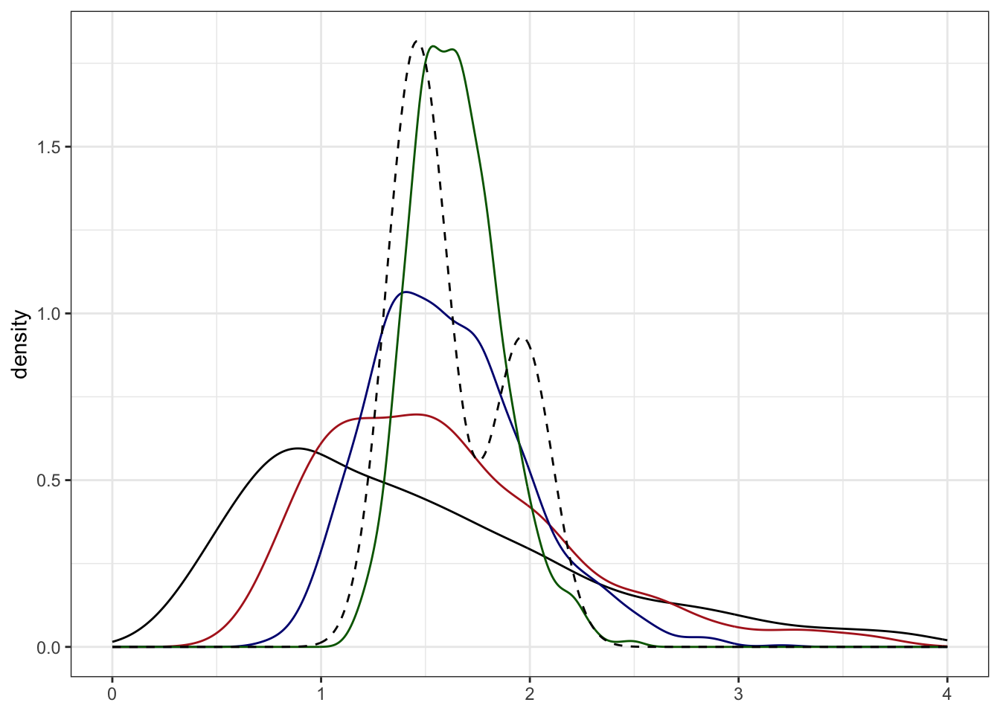
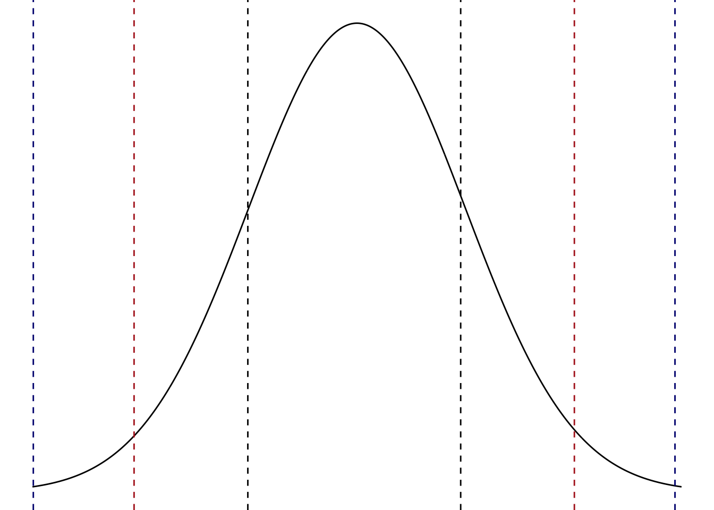
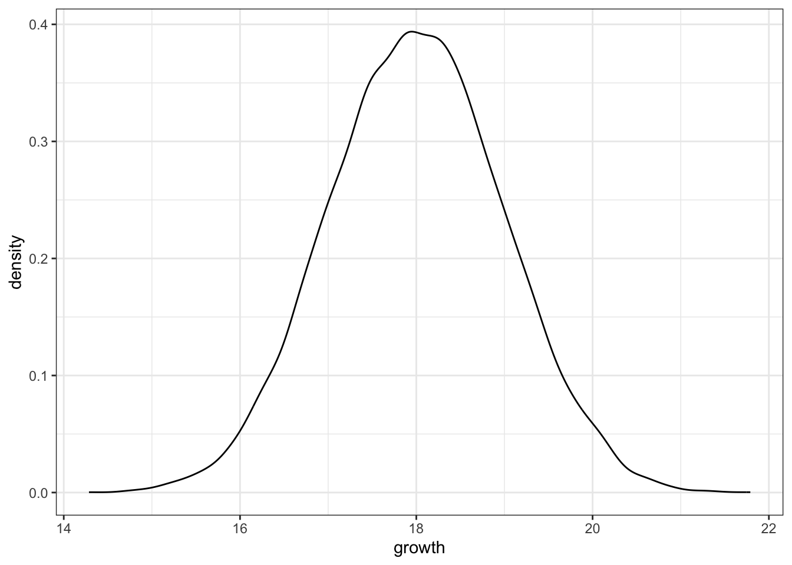
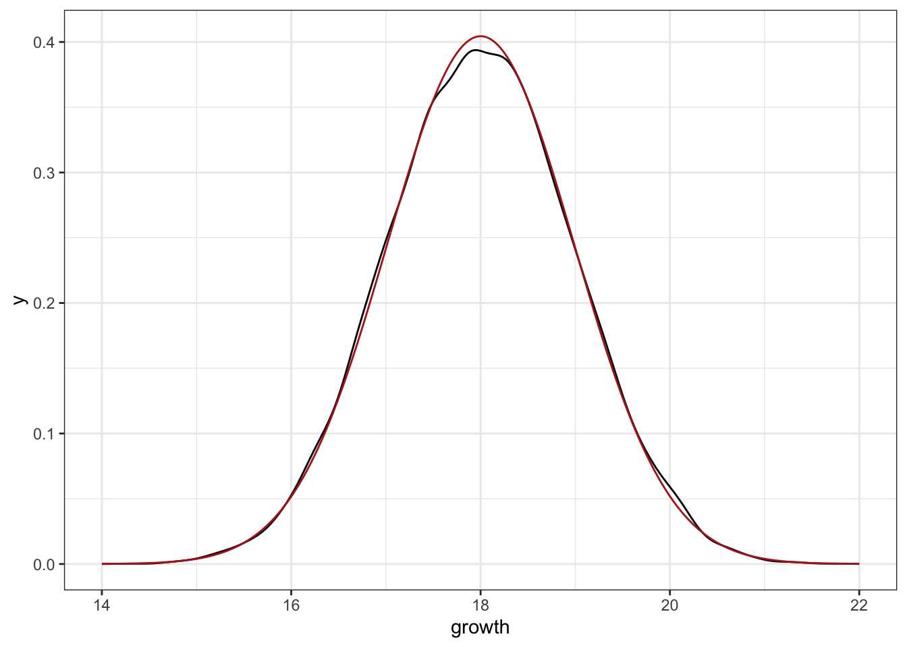
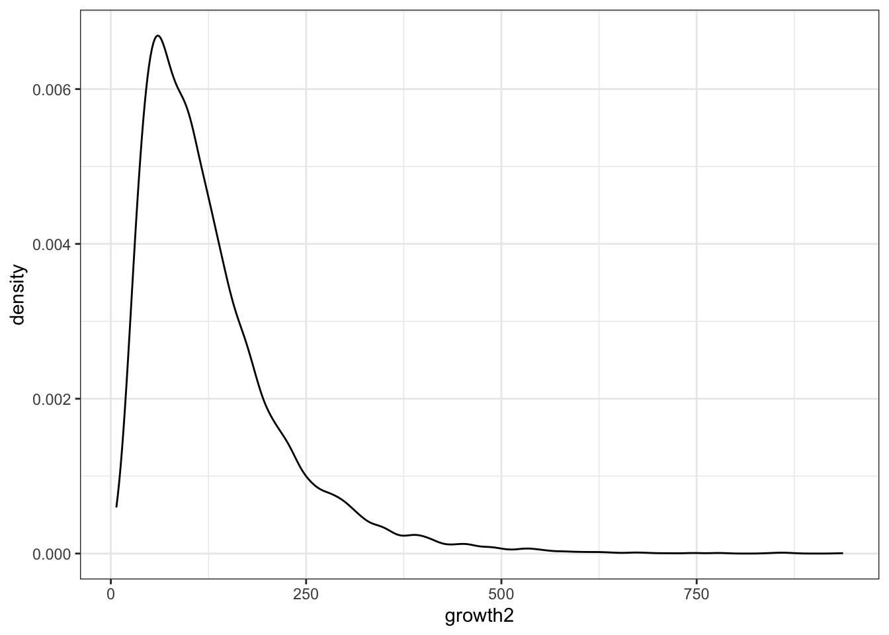
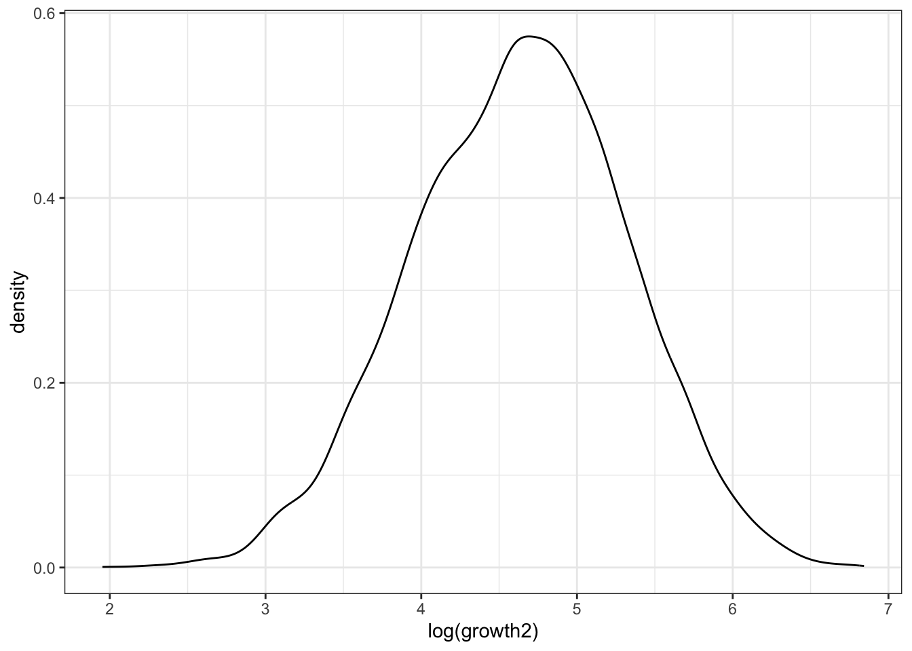
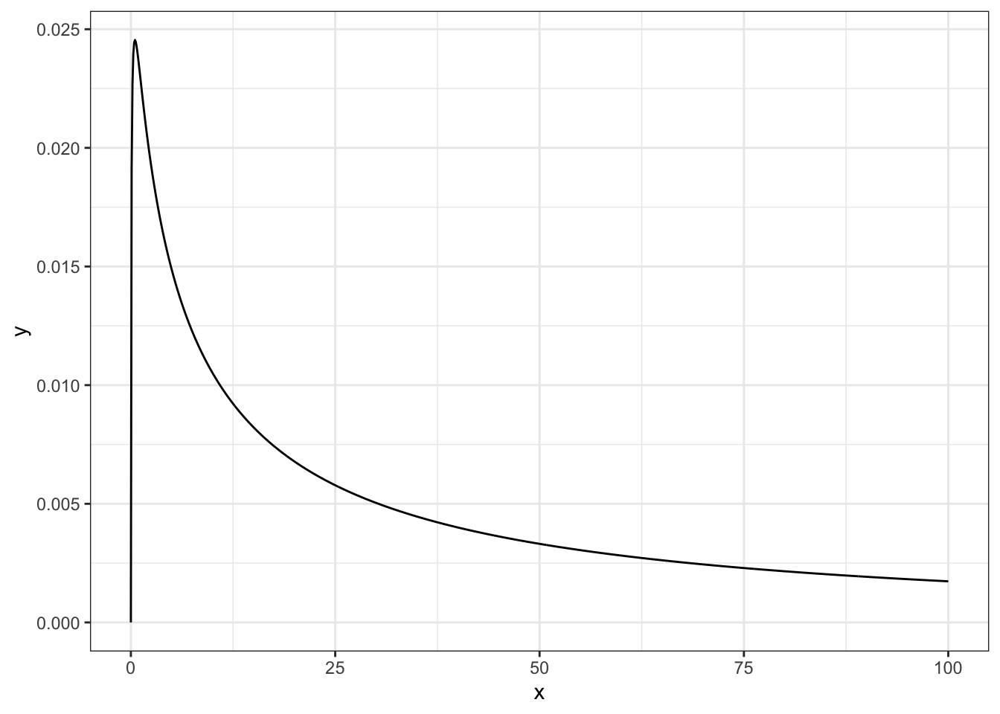

5 3. Rational thinking under uncertainty.
5.1 3.1. understanding uncertainty
There is a pandemic coming our way, like a lurching sea monster from the deep pit, and we need to model its course. To do this we need, among other things, to fix the model input that is called the R0 (the number of people infected on average by a single infected person). Initially, we will have little data to estimate the R0 on, which makes R0 a known unknown. So we estimate it on the data that we have, only to end up with wide error margins, which will be carried over into our prediction of the course of the epidemic. This way we transfer uncertainty from data to model to prediction to interpretation to policy. Surely the policy makers deserve to know that there is a large but quantified level of uncertainty about how many hospital beds are needed within a month or so, as this would allow them to implement policies that err on the safe side. Or, alternatively, we could just pick a couple of point values for the R0 from thin air and run a couple of models that result in predictions with much narrower error margins. Of course, everybody loves certainty. Indeed, this is pretty much what happened in March-April 2020 with a dozen or so covid models in the UK, US, and Estonia, which gave wildly different predictions with non-overlapping quite narrow errors. In some cases these models resulted in policy decisions that clearly failed. This way we have manufactured model-based certainty, by incurring the cost of banishing the residual uncertainty into the murky realm of unknown unknowns. We only become aware of the presence of unknown unknowns from absence of success, and as we cannot really understand, much less quantify them, they are really scary.1 The moral of our story is that the aim of the scientist should be to tame as much of the wild uncertainty that she can, by turning it into quantifiable known unknowns. It is not to convert uncertainty into certainty, which is logically impossible, as much as building a perpetum mobile is physically impossible, and often leads to grief.
In any decent model of a biological process there are different types of uncertainty that include
the uncertainty arising from biological variation
the uncertainty arising from sampling error
the uncertainty arising from the model fitting algorithm
the uncertainty arising from the model structure (linearity, normality, and whatnot)
the uncertainty arising from what is actualy modeled vs. what we want to know based on this modeling.2
Taken together, these motley sources of uncertainty pretty much guarantee that our predictions of complex phenomena are over-confident. This holds for both formal and informal predictions. For example, In April 2020, David Spiegelhalter and his colleagues asked 140 UK experts and >2,000 non-experts for prediction on the number of Covid-19 deaths by the end of the year. Experts median estimate was 30 000, whereas the non-experts was 20 000. The true number was 75 000, being inside only a third of the experts’ prediction intervals and in only a tenth of the non-experts’. If people estimate a 95% prediction interval for something and reality falls into this interval in only 30% of the cases, then on average they underestimated uncertainty very greatly; while not only realizing it, but rejecting even the possibility of values similar to the true value as very unlikely. A major problem with formal modeling of uncertainty is that it gives false confidence about uncertainty!
Let’s assume, for the sake of argument, that we live in a fully deterministic world where there is no uncertainty concerning the past, present, or future. In this world it is possible, in principle, to predict exactly when a butterfly flips its wings a thousand years from now. The deterministic world is fully described by a set of rigid cause-effect relations, and there is no stochasticity in it. Objectively, in there nothing is uncertain. But still, there are humans in the ointment, and humans tend to be fallible. Even when they measure a quantity with a perfectly calibrated instrument, there is always some measurement error. And that error is enough to introduce uncertainty into our deterministic world. This uncertainty is subjective, or epistemic – it belongs to us, not to the thing that was measured – and it propagates to any conclusions based on these measurements. In such a world, even if in principle we could say that patient X dies within a week, because of this kind of propagated error we can only say that it is plausible that patient A dies within a week, or that there is a risk that patient X dies within a week.
Of course, things can be more or less plausible and the risk can be higher or lower, which means that we need a language that allows numerically quantification of these things. This language is the probability theory. We define probabilities mathematically in chapter …, but here suffice it to say that probabilities are real numbers between 0 and 1 (although not every scale 0…1 is probability scale). If we denote the hypothesis “patient X dies within a week” with “A”, then P(A) is the probability of the hypothesis A being true (patient X really dying).
P(A) = 0 means that we are absolutely sure that X stays with the living (but can we ever be sure of such a thing?),
P(A) = 0.1 means that we are pretty sure that X lives,
P(A) = 0.5 means that we think that both outcomes are equally likely.
P(A) = 0.9 means that we are as sure that X dies as we were sure that X lives, when P(A) was 0.1,
P(A) =1 means that we believe that it is a sure thing that X is dead within the week.
Now, after the week is up the P(A) can only be 0 or 1 (unless we lost track of X), but until that time, or until X dies, the P(A) will move between these extremes, subject to X’s condition and our knowledge of it.
Why we need numerical probabilities? The answer is twofold: (i) we can do formal calculations with numerical probabilities, which is basically what statistics is, and (ii) it has proved patently impossible to make different people understand the non-numerical representations like very likely, extremely likely, somewhat likely, the same way. This holds even for professionals.
Now, suppose that we live in a world, where truly stochastic stuff happens (be it in a quantum level or in weather prediction, or wherever). This world is only partially causal, meaning that (i) cause-effect relations can come with built-in randomness (sometimes they work, sometimes they don’t, like smoking causing cancer), or (ii) some relations are inherently acausal (completely unpredictable, like radioactive decay) Does the meaning of P(A) change? The answer is, no. In this world we still have measurement uncertainty, which we try to reduce as much we can, and on top of this is the real, irreducible uncertainty, which comes from how the world itself works. They converge, and can never be disentangled, in our final probability P(A), which is still epistemic.
Another example: the weather report says that P(rain) is 60%. What does it mean? It either rains or it doesn’t, so P(rain) cannot describe a physical feature of the world. “60% rain” cannot be objective in the sense of “being really there”. Usually P(rain) is calculated by running a weather model many times with slightly differing input data and counting the relative fraction of runs where the model predicts rain. If 6 models out of 10 predict rain, then the weatherman says that “P(rain) = 0.6, or there’s a 60% chance of rain”. Although the 60% was derived from a relative frequency, this does not matter for the interpretation – the probability is still epistemic.
I’m writing this because traditionally it is taught to students that probability is a long-run relative frequency of events that really happen, or at least could happen in principle, and that therefore P(A) is “objective” and “a real thing”. It has been understood for a century that this thinking is fundamentally flawed, as it ascribes reality to fictional objects. So probability is a bit like a unicorn: a beautiful fiction. Likewise, there is no shame in interpreting P(A) as a frequency, but this does not make it “objective” in any meaningful sense.
5.2 Numerical measures of uncertainty
Risk, probability - nr_events/(nr_non_events + nr_of_events) a.k.a succeses/tries
Relative risk or risk ratio (RR) - \(\frac {P(A\vert B=0)}{P(A\vert B=1)}\). Probability of cancer for smokers divided by probability of cancer for non-smokers.
Relative risk reduction is how much risk is reduced in an experimental group compared to a control group. (CER – EER)/CER, where CER is control group event rate and EER is experimental group event rate. If 70% of the control group died and 35% of the experimental group died, the relative risk reduction for the new drug would be (0.70 - 0.35)/0.70 = 0.5 or 50%. In other words, the death rate in the experimental group is half that in the control group.
Absolute risk reduction (risk difference, AAR) is the absolute difference in outcomes between 2 groups. It tells how much the risk (Pr) of something happening decreases if a certain intervention happens. AAR = CER (Control Event Rate) – EER (Experimental Event Rate). 25% of people on medication A have poor outcomes, but 8% of people who receive medication B report bad outcomes. The absolute risk reduction is 25% – 8% = 13 percentage points.
The hazard ratio (HR) is a comparison between the Pr of events in a treatment group, compared to the Pr of events in a control group. It’s used to see if patients receiving a treatment progress faster (or slower) than those not receiving treatment. HR can be defined as the relative risk (RR) of an event happening at time t. HR = 3 means that three times the number of events are seen in the treatment group at any point in time. In other words, the treatment will cause the patient to progress three times as fast as patients in the control group. HR= 1 means that both groups are experiencing an equal number of events at any point in time. HR= 0.333 tells that the hazard rate in the treatment group is one third of that in the control group. Hazard ratios can be used to: show the RR of a complication in treatment group vs. control group, to show whether a treatment shortens an illness duration, or to show which individuals are more likely to experience an event first. While a HR is similar to RR, it isn’t exactly the same. Let’s say a clinical trial investigated survival rates for two drugs (A and B). The reported HRs and RRs were both 3. ThecRR tells that the risk of death is 3 times higher with drug A over the entire period of the study (i.e. it’s cumulative). The HR tells you that the risk of death is 3 times higher with drug A at any particular point in time. When evaluating hazard ratios, also use another measure such as median survival time, overall survival, or time to progression. These tell about clear benefits (i.e. survival time is increased on average by 180 days).
Odds = P(event)/P(non_event). \(odds = \frac {P}{1 - P}\) where P is probability. If P = 0.5 then odds = 1/1 or 1:1 or 1 to 1.
OR or odds ratio \(OR = \frac {odds(cancer~ in~ smokers)}{odds(cancer~ in~ non-smokers)}\). OR is always larger than RR. If P(event) is low (<0.1) then OR is similar enough to RR, otherwise OR can be larger by an order of magnitude or more. OR has no intuitive interpretation (the RR does). OR = 1 means that exposure to A does not affect the odds of property B. OR > 1 means that there is a higher odds of property B happening with exposure to A. Only the OR can be used in case-control studies. Because to calculate the RR, one must know the risk. Risk is a proportion of those exposed with an outcome compared to the total population exposed. This is impossible in a case-control study, in which those who already have the outcome are included without knowing the total population exposed.
5.3 3.2. Probability as counting
In a commencement speech at USC in 1994, the famous investor Charlie Munger said,
“If you don’t get this elementary, but mildly unnatural, mathematics of elementary probability into your repertoire, then you go through a long life like a one-legged man in an ass-kicking contest. You’re giving a huge advantage to everybody else. One of the advantages of a fellow like Buffett, whom I’ve worked with all these years, is that he automatically thinks in terms of decision trees and the elementary math of permutations and combinations….”
Lets find out, what this means.
We start with a simple question: “what is the probability of getting a 6, when throwing a fair die?”. Surprisingly, it took the gamblers a couple of millennia, until 16th century to find out the answer - specifically, it was first described by Fazio Cardano (1444–1524). The truth is that we can simply throw a die N times and count the k sixes that we get. Then P(six) = k/N. The probability of sixes is nothing more than the relative long-run frequency of sixes over all throws of the die. As the N increases, the estimated P(six) will gradually approach the true probability of sixes. If the die has six sides, which are equally likely to come up, then P(six) = 1/6, as is the probability for getting any number between 1 and 6.
5.4 3.2.1. Counting from a series of events
Imagine all possible results of a single throw of the die: {1, 2, 3, 4, 5, 6}. This is akin to imagining all possible futures that can ensue from a throw of a die.
Count all possible futures, where the result is a six. As there is only one, k = 1.
Count all possible futures. As there are 6, N = 6.
Find the probability of sixes as P(six) = k/N = 1/6.
This scheme seems almost too trivial to show, but it is actually quite subtle, and important for understanding the scientific method. 3
The advantage of this classical interpretation of probability is that it is fairly easy to grasp; but more importantly, it seems to be objective, as it describes a process that happens in the world (in this case, someone throwing a die). Nevertheless, one should be aware that the process includes the thrower, as well as the die, the table and the laws of nature, to say the least. On the other hand, a serious disadvantage of such probability is that it can only apply where there is a frequency of events. Clearly, scientific hypotheses, being unique manifestations of human ingenuity, do not have a frequency. Thus, people whose repertoire gets no further than frequentist probabilities may call themselves objective, but they cannot even ask the question, “what is the probability that I am right in calling myself that?”
5.5 3.2.1.1. Counting the events in a series of experiments leads to frequentist statistics
Interestingly, the people who think they cannot ask the question about probability of a hypothesis, nevertheless try to answer it. For this they use something called null hypothesis testing. This is a statistical paradigm created by R.A. Fisher, Jerzy Neyman and Egon Pearson in 1920-1930-ies. The crux of frequentist statistics is that while hypotheses have no frequency, datasets do (albeit, only under certain precisely defined conditions). Imagine an infinite population of measurement values, from which you randomly and independently draw a sample of N values, then calculate a statistic, for example the mean. This sample mean reflects the population mean, but because of sampling error it does not do so precisely.
The sampling error tends to be smaller, when N is larger – and it gets smaller proportionally to the square root of N. As N grows, it gets progressively harder to push the sampling error downwards.
Now, imagine that we draw k such samples (each with size N) and calculate k means. The central limit theorem of statistics tells us that no matter what the sample data distribution, those means are approximately normally distributed. Note that for the central limit theorem to work, N must be at least 30, dependent on the data distribution. The overall mean of the k means is then the most likely estimate for the population mean, which in turn is the value most likely to be encountered in the population. We illustrate this by first simulating 1000 random samples, each with N=3, from standard log-normal distribution, and then calculating 1000 means. Not surprisingly, plotting the raw data leads to a nice lognormal distribution (dashed black curve), and plotting of the means (continuous black curve) leads to a fairly similar curve. However, when the 1000 samples get bigger (N=20, red curve; N=60, blue curve), the distribution of their means gets closer to normal.
Moreover, from the normal distribution it is easy to find the region that contains \(X\%\) of the area under the curve, or \(X\%\) of the probability density. The parameter values that delineate this area define \(X\%\) confidence interval (CI).
The interpretation of \(X\%~ CI\) is that if we draw many samples and calculate as many means, then the true population mean falls inside \(X\%\) of them. 4 Formally, the CI makes a frequency statement about the error properties of the algorithm that calculates the CI, rather than about your sample mean. Nevertheless, if we have no background information to take into account and if the aforementioned assumptions (especially those of normality, and random and independent sampling) hold, then a confidence interval is numerically equivalent to Bayesian credible interval (also abbreviated as CI), whose interpretation is simply that \(X\% ~CI\) means that the true expected value lies within this interval with X/100 probability. So you could view your confidence interval as a quick and dirty approximation to the credible interval, which you really want to have; but only if some strong assumptions hold.
The confidence interval is not the only, or even the most popular, tool of frequentist statistics. This distinction belongs to the p value.
The logic of p value goes like this.
As hypotheses do not have probabilities, but datasets do, we can speak of probability of data under some hypothesis – \(P(d \vert h)\) or “probability of data given the hypothesis is true” – in the hope that this says something about the probability of that hypothesis, or \(P(h \vert d)\).
For a two-group comparison (experimental values versus control values, say) the easiest way to do that is to define a null hypothesis, or \(H_0\), whereby the means of the two groups are identical 5.Now, if there really is no effect, then by virtue of the sampling error we expect to see an effect anyway (this is called sampling effect or sampling error). And any true effect will be on top of the random sampling effect, which is equally likely to increase or decrease our estimate of the true effect. Therefore it is important to be able to distinguish between sampling effects and possible true effects. There are two possibilities. (i) If the true effect is not much larger than the sampling effect, they cannot be disentangled (at least not without collecting new samples). We must then say that the observed effect is consistent with the sampling effect and declare that we could not find evidence for any true non-random effect. (ii) If the observed effect is much larger than estimated sampling effect, then we can declare with confidence that the effect is non-random. Alas, non-randomness in no way guarantees that the effect was actually caused by the experimental treatment.
We model the sampling error of the \(H_0\) as a normal distribution, whose mean equals zero (the zero effect) and whose standard deviation equals the sample standard deviation divided by the square root of N.6 The standard deviation of the means (as opposed to original data points) is called the standard error of the mean or SEM. If N is large enough (at least 30), then \(mean +/- SEM = 68\%~ CI\), \(mean +/- 1.96SEM = 95\% ~CI\) and \(mean +/-3SEM = 99 \% ~CI\).

We use the sample data in estimating SEM of the \(H_0\) because statistical software assumes that the scientific hardware (your brain) has no independent knowledge of the true population variation, and thus the sample values is used in lieu of population values. However, sample estimates of SEM can be highly misleading when N is small. Also, when the data is non-randomly drawn from the population, then even a very large sample is likely to be a poor representation of the population. As in many lab experiments N tends to be very small and it is often hard to even say, what a random sample means, \(H_0\) testing tends not to work well in many branches of biology.
We now calculate the mean of our sample and superimpose it on the normal distribution of \(H_0\). If our sample mean is situated where the \(H_0\) distribution is still high, then it is consistent with the sample effect. On the other hand, if the height of the null distribution is very low, then the sample mean is inconsistent with the sample effect. Quantitatively, the fraction of the \(H_0\) density that is cut of by our sample mean is the one-sided p value.
p value is the long run relative frequency of obtaining data that is as far or further away from \(H_0\) than your sample data, if the \(H_0\) holds.
The p value was introduced by Roland Fisher in 1923 for use as an informal measure of strength of evidence. If p is small, 0.001, say, we might be tempted to claim that we have strong evidence that the \(H_0\) is false.7
A decade or so later Neyman and Pearson added to it something called significance level, often denoted by \(\alpha\), and derived a quite different use for the p value in the long-term quality control of the experimental setup. In their scheme, which is mathematically impeccable, p value is not a direct comment on the experiment at hand, but rather on the experimental system that generated this experiment.
The goal of employing \(\alpha\) is to provide an automatic procedure that makes discoveries, and does so with fixed error rates. By discovery we mean that “an effect is real”, or something like it. A discovery dichotomizes our contiuous measurements into statistically not significant non-discoveries and statistically significant discoveries, which can be either true discoveries or false discoveries (false-positives).
If \(p < \alpha\), then we can call the p value statistically significant. By convention, \(\alpha\) is set either as 0.01, 0.05 (the most often used value), or 0.1. By setting \(\alpha\) we keep the long run relative frequency of type I errors at \(\alpha\) level.8 This dichotomization, which comes at a cost of information loss, allows to define the frequency of type I errors as the relative frequency by which true \(H_0\) are falsely classified as “statistically significant. Thereby we have a formal procedure that allows us to make discoveries without any more scientific input as data. If this actually worked, being a scientists would be a low-education job.
The Neyman-Pearson procedure is fine, statistically speaking. But its use in science carries great dangers. When scientists employ it with \(\alpha\) set to 0.05, they implicitly agree to publish on average every 20th true \(H_0\) as a statistically significant false-positive finding. The level of harm that ensues depends on the true frequency of true effects. This is quantified as the False Discovery Rate (FDR), where FDR = false significant effects / all significant effects. If scientists test predominantly true effects (most experiments end up in showing a true effect of experimental treatment), then FDR is low and the use of statistical significance is not an obvious folly. On the other hand, if scientists are taking risks and testing hypotheses, most of which are false (most \(H_0\)s are true), then the Neyman-Pearson procedure leads to a terribly misleading picture of science as a whole. As philosophers seem to agree that testing risky hypotheses is what good scientists should be doing, therein obviously lies a problem.
5.6 3.2.2. Counting in the multiverse
Luckily for us, after 16th century with its borderline medieval thinking came the 17th and the scientific evolution. The thing that really unleashed scientific rationality was a question of gambling. Consider a game where 2 players equally pool their money to a pot that goes to the winner. The game is simple: they cast dice and after each round, whoever gets the largest sum, gets a point (draws don’t count). The game goes on until someone collects 9 points and wins the pot. But what happens when the game is suddenly interrupted after, say, player A has 7 points (and two to go) and player B has 8 points (and one to go)? Is there a just way of dividing the pot? This question bugged the best minds of Europe for centuries, when it was pretty universally thought that there isn’t a solution, until in 1654 Blaise Pascal and Pierre de Fermat solved it. While earlier attempts centered on getting an answer from the games actually played (the 8 and 7 points in our example), which led to contradiction, the insight of Fermat was that one could do a counterfactual analysis by pretending that the game goes on, albeit not in our world, but in an expanding array of parallel worlds.
Here the starting point (A7B8) is in our universe. Then the 1st imaginary round splits it into two imaginary ones (A8B8 and A7B9), one of which leads to a win by player B. But on the next round player B does something that he would presumably never do in life: although there is no way for him to lose, he nevertheless keeps on playing and consequently in the second round the worlds split again, now into four. At this level every game ends in somebody winning and we can count the relative frequency of A-s wins (1) and B-s wins (3). Thus it makes sense to give ¼-th of the pot to A and ¾-th to B. This is the same as to say that P(A wins) = ¼ and P(B wins) = ¾. Probability theory is nothing but counting across the multiverse. Well, actually it is mostly about inventing algorithms that speed up this counting, as the multiverse, expanding exponentially, soon becomes non-conductive to hand-counting.
At a more conceptual level, we now have a frequency probability for a unique event. But in the multiverse everything has a frequency, and thus a probability. Since the summer of 1654, even scientific theories have probabilities. So we can bring to bear the mathematics of probability theory that is based on counting these frequencies.
5.7 3.3. From rules of combinatorics to probability distribution
5.8 3.3.1. The Addition Rule
Let \(E_1\) and \(E_2\) be mutually exclusive events. Let event \(E\) describe the situation where either \(E_1\) or \(E_2\) will occur. The number of times event E will occur can be given by the expression:
\[n(E) = n(E_1) + n(E_2)\]
where
\(n(E)\) = Number of outcomes of event \(E\)
\(n(E_1)\) = Number of outcomes of event \(E_1\)
\(n(E_2)\) = Number of outcomes of event \(E_2\)
5.9 3.3.2. The Multiplication Rule
Suppose that \(E_1\) can result in any one of \(n(E_1)\) possible outcomes; and for each outcome of the event \(E_1\), there are \(n(E_2)\) possible outcomes of event \(E_2\). Together there will be \(n(E_1) × n(E_2)\) possible outcomes of the two events. That is, if event \(E\) means that both \(E_1\) and \(E_2\) must occur, then
\[n(E) = n(E_1) \times n(E_2)\]
If you have a choice of \(n_1\) elements for the 1st position, a choice of \(n_2\) elements for the 2nd position, and so on up to \(n_k\), then the number of possible combinations of sequences of k elements is \(n_1 \times n_2 \times … \times n_k\).
5.10 3.3.3. Permutations
How many different combinations from 3 elements ABC can we get? The answer is 6: {ABC, ACB, BCA, BAC, CAB, CBC}. This generalizes to \(n_1 = 3\), \(n_2 = 2\), \(n_3 = 1\) -> \(n_1 \times n_2 \times n_3 = 6\), or by using n factorial: \(n! = 3! = 3 \times 2 \times 1 = 6\).
n factorial is defined as the product of all the integers from 1 to n.
\[n! = (n)(n - 1)(n - 2) ... (3)(2)(1)\]
n distinct objects can be arranged (permuted) in n! ways.
5.11 3.3.4. Variations (the order matters and repetitions are not allowed)
n – nr of elements k – the length of the sequence
\[V_n^k = n(n - 1) … (n - k + 1) = n!/(n - k)!\]
8 athletes compete, how many different possibilities for the first three places? \(n_1 = 8\), \(n_2 = 7\), \(n_3 = 6\)
8 x 7 x 6 = 336
(8 - 3)! = 5!
8!/5! = 336
5.11.1 3.3.5. Combinations (the order is not important)
How many possible combinations of k elements is it logically possible to get of n distinct elements, or \(\binom {n}{k}\)?
\[\binom {n}{k} = \frac{n!}{k!(n - k)!}\]
There is a single way of obtaining 0 elements out of n possibilities
\[\binom {n}{0} = 1\] and there is a single way of obtaining n elements out of n possibilities
\[\binom {n}{n} = 1\]
The number of different sets of 4 letters which can be chosen from the alphabet is \(\binom {26}{4} = \frac{26!}{4!(26-4!)}\)
5.12 3.3.6. From counting to binomial probability distribution
Q: What is the probability \(P_n(k)\) that event A occurs exactly k times out of n tries?
- we start by assuming that all k outcomes come up in an uninterrupted sequence. We look at the full series of n tries. Then by the multiplication rule:
\[P(A_1…A_k \lnot A_k + 1 …\lnot A_n) = P(A_1) …P(A_k)P(\lnot A_k + 1) … P(\lnot A_n) = p^k (1 - p)^{n-k}\]
We would get the same results no matter where the k outcomes are in the sequence. If the sample space only has two members: \(\{0, 1\}\), a.k.a. if k is limited to only 0 or 1, and if n = 1, then this becomes Bernoulli probability mass distribution
\[f(k,p) = p^k(1 - p)^{n-k}\]
Example: if p = 0.1 and k=0, then \(f(0, 0.1)= 0.1^0(0.9)^1=1 \times 0.9\); and \(f(1, 0.1) = 0.1^1*0.9^0 = 0.1 \times 1\)
This is, however, not the answer to our question, where both n and k can be any integer equal or larger than zero.
- If k can be \(>1\), then we also need to take into account that the nr of combinations of length n, where event A comes up k times, is
\[\binom{n}{k} = \frac{n!}{k!(n - k)!}\]
- By multiplying 1. And 2. [Pr of a single series times the number of combinations with k events] we get \[P_n(k) = \binom{n}{k}p^k(1 - p)^{n-k}\] This is the binomial distribution.
Example: What is the Pr of getting 6 heads out of 10 coin tosses? \[P_{10}(6)= \binom{10}{6} (1/2)^6 (1/2)^4 = (10!/(4!6!)) (1/2)^6 (1/2)^4 = 0.205\] Table: Full binomial probability distribution for \(P_{10}(5)\)
| k | 0 & 10 | 1 & 9 | 2 & 8 | 3 & 7 | 4 & 6 | 5 | sum |
| Pn | 0.001 | 0.010 | 0.044 | 0.117 | 0.205 | 0.246 | 1.000 |
We can plot this probability distribution as a symmetric graph (it is symmetric as long as A and notA are equally probable).
5.13 3.4. Probability distribution
As probability measures epistemic uncertainty, the role of the probability distribution is to provide the full description of uncertainty over the sample space. The formal output of any statistical analysis is a probability distribution.
A probability distribution lists for every member of sample space the probability of this member.
The sample space (\(\Omega\)) is the full set of mutually exclusive and exhaustive events/outcomes/hypotheses/parameter values that comprise all logically possible futures (the full multiverse).9
Importantly, we can slice the \(\Omega\) cake in infinitely many ways, and the probability distribution that we end up with depends on the slicing. Whatever may be said of the downstream analysis, slicing the \(\Omega\) is a scientific, rather than logical, exercise. A robot may well be able to calculate a probability distribution, but this will not turn it into a scientist!
5.14 3.4.1. Binomial disrtibution
For a coin throwing experiment the omega is \(\{heads,~ tails\}\), for measurements of a continuous variable \(\Omega\) is the infinite set of real numbers, and so on.
What sort of information does a probability distribution contain? Say, we have a fair coin which we toss 10 times and count the number of heads. We model this experiment as a Bernoulli process, leading to binomial probability distribution. The sample space X is then some number of heads between 0 and 10, a.k.a. X = \(\{0, 1, …, 10 ~heads\}\).
Any sequence of experiments conforming to these requirements is a Bernoulli process.
n independent experiments (tries), each with two possible outcomes (\(\Omega = {A \land \lnot A}\)). 10
If \(A_i\) is the outcome A in i-th experiment, the \(P(A_i)\) is constant over the experiments
\(P(\lnot A) = 1 - P(A)\)
Show code
data <- tibble(x = 0:10,
y = dbinom(x=x, size=10, prob=0.5))
ggplot(data=data, aes(x=x, y=y)) + geom_col() + theme_bw()
The most likely outcome of this experiment, X = 5, is at the highest point of the binomial distribution. And consequently, the higher the distribution over some value of X, the higher the probability that we will get as many heads from our experiment. We can look at this as a probability ratio – if the probability density over some value \(X=x_j\) is two times higher than over some other value \(X=x_k\), then the result \(x_j\) is two times likelier to happen than the result \(x_k\) (but note that both results may be a lot less likely than the most likely result). Thus, even before starting the experiment, we can ask the following kinds of questions, solely based on the probability distribution:
- What is the most likely number of heads that we will get? Technically this is the expected value of X, or \(EX\). The expected value of sample space X is the sum of each individual value \(x_i\) times the probability \(p_i\) of that value being the true value. It is also the value \(X = x\), which is the center of mass of the probability distribution. \[EX = \sum x_ip_i\] or in R:
Show code
(EX <- sum(data$x * data$y))[1] 5Interpreting the EX is a thorny problem. Perhaps the most honest way to do this would be to imagine that every individual value, from which the EX was calculated, is in a bag in euro currency. Then, if you pay EX euros to extract a random value, this transaction will most probably allow you to stay even. For most purposes, this does not sound like a scientifically relevant interpretation. Importantly, the EX is not the most likely single value you might draw (this being the mode), nor is the value from which half the values are smaller/larger (this being the median).11 The EX is more popular than the mode or the median because historically it was often impossible to calculate CI-s and p values from the latter. In modern statistics this is no longer so. Thus you should choose your measure of central tendency/typical value based on scientific preferences.
- What is the standard deviation of the probability distribution? We start by defining variance as \(VX = \sum(x_i - EX)^2p\) where \(x_i - E(X)\) is the deviation of i-th value from the expected value of X. \[SD(X) = \sqrt {VX}\]
Show code
sqrt( sum( (data$x - EX)^2 * data$y) )[1] 1.581139The range \(EX +/- SD(X)\) usually covers about 2/3 of the values at the center of the distribution. For binomial distribution the variance is \(V[X] = Np(1 - p)\), and if \(Np\) is an integer, then mean = median = mode. Standard error for a proportion p is \(\sqrt{\frac{p(1-p)}{N}}\).
- What is the probability that the true value is greater than/smaller than/lies within an interval of X? If, for example, \(2\%\) of the probability density lies beyond (is greater than) some value \(x_i\) of X, then we say that the probability that \(X > x_i\), or \(P(X>x_i) = 0.02\).
To get the probability that we get 7 or more heads out of 10 coin tosses we sum the probabilities for every outcome with 7 or more heads:
Show code
d1 <- data %>% filter(x >= 7)
sum(d1$y)[1] 0.171875- What interval of X covers some given fraction of the probability density? For example, if \(95\%\) of the probability density lies between values \(X = x_j\) and \(X = x_k\), then we say that the true value of x lies within the interval \(x_j\) and \(x_k\) with \(95\%\) probability. This is then the \(95\%\) credible interval.
When I make 10 tosses, then how many heads will I get with 50% probability?
Show code
a <- quantile(data$y, prob=0.5)
data %>% filter(y >= a) # A tibble: 7 × 2
x y
<int> <dbl>
1 2 0.0439
2 3 0.117
3 4 0.205
4 5 0.246
5 6 0.205
6 7 0.117
7 8 0.0439So with probability 0.5 I get 2 to 8 heads.
In R dbinom() gives the density of binomial distribution. For example the probability of X = 3, or P(X=3) where \(X \sim Binom(5, 0.2)\) is the same as
\[dbinom(3, 5, 0.2) = \binom{5}{3}(0.2)^3 (0.8)^2 = 0.0512\]
pbinom() is the cumulative density function (CDF), which takes first the value X where the function is evaluated, and then the 2 parameters of the binomial function.
\[pbinom(3, 5, 0.2 = \sum \binom{5}{k} (0.2)^k (0.8)^{5 - k} = 0.9933)\]
rbinom() generates binomial random variables. rbinom(10, 5, 0.5) generates 10 i.i.d. (independent and identically distributed) Bin(5, 0.5) random variables (10 numbers between 0 and 5, which are numbers of successes from 5 experiments, the whole thing repeated 10 times).
Examples of binomial calculations in base::R
- The probability of a particular outcome (probability of getting 5 heads out of 10 coin tosses if P(head)=0.5)
Show code
dbinom(x=5, size=10, prob=0.5)[1] 0.2460938Note that the probability of a particular outcome like k=5 successes is only computable in the discrete case. In the continuous case, the probability of obtaining a particular point value will always be zero.
- Using the dbinom() or pbinom(), we can get the cumulative probability of obtaining 1 or less, 2 or less successes.
Show code
dbinom(0, size = 10, prob = 0.5) +
dbinom(1, size = 10, prob = 0.5) +
dbinom(2, size = 10, prob = 0.5)[1] 0.0546875Show code
#or equivalently
sum(dbinom(0:2, size = 10, prob = 0.5))[1] 0.0546875Show code
#or equivalently
pbinom(2, size = 10, prob = 0.5, lower.tail = TRUE)[1] 0.0546875Show code
# For the probability of obtaining 3 or more successes out of 10, lower.tail = FALSE- We can also find out the value of the variable k (the quantile) such that the probability of obtaining k or less than k successes is some specific probability value p. This is the inverse of the cumulative distribution function (the quantile function). The inverse of the CDF (known as the quantile function in R because it returns the quantile, the value k) is available as qbinom(). What value k of the outcome is such that the probability of obtaining k or less successes is 0.37?
Show code
qbinom(p=0.37, size = 10, prob = 0.5)[1] 4- We generate simulated data (n data points) from a binomial distribution by specifying the number of trials and the probability of success
Show code
rbinom(n=5, size=10, prob=0.5)[1] 7 5 7 1 2Here we did 5 simulated coin tossing experiments, with 10 tosses each.
5.14.1 3.4.2 Poisson distribution
If you have a bernoulli sequence, whose number of events (successes) is much smaller than the number of experiments, then the binomial distribution can be converted into Poisson distribution, which only takes in the number events. Poisson distribution is a good data model if
there are many chances for an event to occur, but taken one-by-one they are all unlikely
these events are independent and exchangeable
the frequency of events are constant (the elementary mechanisms generating the events do not change)
two events cannot occur in the same time/place
the probability of an event is proportional to an interval in time or space.
The number n of arrivals of a Poisson process in unit time is Poisson distributed. The single parameter is the rate \(\lambda\) of the arrival of the Poisson process (\(\lambda\) is an integer > 0). The Poisson paradigm is also called the law of rare events. The interpretation of “rare” is that the probability of event is small, not that \(\lambda\) is small. For example, the low probability of getting an email from a specific person in a particular hour is offset by the large number of people who could send you an email in that hour.
\(\lambda\) is also the expected value (the number of events), and its standard deviation is defined as \(\sqrt \lambda\). Its formula is
\[f(x) = exp(- \lambda) \frac{\lambda^x}{x!}\] If we have observed 5 events in a time interval (5 deaths in a week, say), then the probability that next week we will have 3 deaths is
Show code
exp(-5)*(5^3/factorial(3))[1] 0.1403739or
Show code
dpois(3, 5)[1] 0.1403739We can plot a Poisson probability distribution like this
Show code
x <- 0:15
y <- dpois(x, 5)
ggplot(data=NULL, aes(x, y)) + geom_col() + theme_bw()
Often biological counts are overdispersed (larger Var than allowed by Poisson). Negative binomial (a.k.a. gamma-Poisson) is a mixture of Poisson distributions that have different \(\lambda\)s. In an overdispersion situation we may want to condition the model on X-vars that will convert the Y-var into a simple Poisson or binomial distribution. Then we do not need to use Negbinomial likelihood. Putting Poisson likelihood into a multi-level model can sometimes help. Negbinomial is a continuous mixture where each Poisson-distributed count comes from its own Poisson distribution. It is a continuous distribution that assumes that each Poisson process has its own \(\lambda\) and that these \(\lambda\)s are gamma-distributed. Gamma distribution has two parameters, \(\lambda\) and \(\phi\). \[y \sim NegBinomial(\lambda, \phi)\] If \(\phi\) gets close to zero, then NegBinomial gets close to normal distribution with the same \(\mu\). if \(\phi >0\), \(Var(X)= \lambda + \lambda 2/\phi\). Larger \(\phi\) gets the distribution closer to pure Poisson. In regression models with Poisson likelihoods we redefine \(\lambda\) as a linear model with log-link.
For overdispersed binomial distributions we use beta-binomial likelihood, which assumes that each event has its own realization probability, and the probability distribution is the distribution of these probabilities, not of a single probability for all events. X-vars do not fix the probability of an individual event. Beta-binomial has 2 parameters: \(p\) is the mean probability and \(\theta\) is the shape parameter. \(\theta=2\) gives a flat distribution between 0 and 1. Beta distribution is in the probability scale. Regression models with beta binomial likelihood look like this:
\[y \sim BetaBinom(n, p, \theta)\] \[logit(p) = \beta X\]
5.14.2 3.4.3. Normal and log-normal distributions
The binomial distribution is the most common probabilistic model for experiments and other phenomena with two possible outcomes. As its assumptions include stability of independent and random events, it is not suitable for all natural mechanisms that generate binary outcomes. So mathematiciens have created a host of other distributions suitable for binary or categorical outcomes, incl. the Piosson distribution, Negative Binomial distribution, the hypergeometric distribution (assumes random draws without replacement, unlike the binomial), etc.
Another common class of outcomes is real numbers, which we call continuous outcomes. The most commonly used probability distribution for modeling continuous outcomes is the normal distribution. For example, if you are running most classical statistical models, like a t test, principal component analysis, correlation, or linear regression, you are probabaly using the normal probability model under the hood. This is so mainly for historical computability reasons - the mathematics of the normal distrtibution is convenient for calculating important statistics with pen and paper. In biology the most useful probability distribution is actually the log-normal distribution.
We start by simulating a process that generates normal/lognormal data.
Lets suppose that we have 12 separate genes influencing a continuous trait (i.e. growth rate). The effects of these genes are independent of each other (The allele status of gene 1 does not have any influence on the effect of allele status of gene 2 on growth rate, and so on). Then the effects are additive. Each realization of an organisms growth rate comes from a random mixture of these genes (the effects of individual alleles are randomly picked from 1 to 2)
A single growth rate:
Show code
# runif(12, 1, 100) generates 12 random numbers between 1 and 100
sum(runif(12, 1, 100))[1] 720.7742What happens, if we simulate 10,000 growth rates?
Show code
growth <- replicate(10000, sum(runif(n=12, min=1, max=2)))
ggplot(data=NULL, aes(growth)) +
geom_density() + theme_bw()
This is close enough to a normal distribution. Lets model these data through an actual normal distribution. The parameter, which determines the exact shape of a binomial distribution, is probability of success (p). Similarly, the exact shape of the normal distribution is determined by two parameters, the \(\mu\), which determines the location of the peak, and the \(\sigma\), which determines the scale of the distribution (roughly speaking, the width of the thing).12 We calculate these parameters directly from the simulated data, as is done by most classical statistical techniques. By fixing the values of \(\mu\) and \(\sigma\) we have fitted the model. We can see that the modeled distribution is very close to data, which means that it is now easy to simulate new data from the normal model and, generally, to study the model as a stand-in for the physical world.

What, if we do not assume independence of effects? Then we assume that the status of gene 1 has an effect on how much the statuses of genes 2, 3, …12 affect the outcome (growth rate). The the simplest model of interacting effects involves taking their product. And this results in lognormal distribution of growth rates.

The thing with log-normally distributed data is that by taking the logarithm of such data (or by plotting them in log scale) we get normally distributed data.

The best test of whether your data is lognormal is to take the logarithm of these data. In the log-scale these data should look normal.
If we think that our data comes from a process that generates approximately normal data (statistically speaking, we are talking about the population, not the sample), then we should model this by normal distribution. The full normal model is described by the function
\[f(x) = \frac {1}{\sigma \sqrt{2 \pi} } exp(-(\frac{(x - \mu)^2}{2 \sigma^2})\]
where x and \(\mu\) are real numbers between -Inf and Inf, and \(\sigma > 0\).
If we set mu to zero and sigma to one (this parametrization is called the standard normal distribution), we can calculate it like this:
Show code
x <- seq(-10, 10, length.out = 1000)
mu <- 0
sigma <- 1
y <- (1/(sqrt(2*pi) * sigma)) * exp(-((x - mu)^2 /(2* sigma^2)))
ggplot(data=NULL, aes(x=x, y=y)) + geom_line() + theme_bw()
In R we have this function as dnorm()
Show code
y <- dnorm(x=x, mean=0, sd=1)
ggplot(data=NULL, aes(x=x, y=y)) + geom_line() + theme_bw()function rnorm() will draw random numbers from a normal distribution
Show code
rnorm(3, mean=100, sd=10)[1] 106.13327 92.58037 99.39897function qnorm() will show quantiles of normal distribution. For example, if p is a vector of probabilities, then
Show code
qnorm(p=c(0.05, 0.95), mean=100, sd=10)[1] 83.55146 116.44854tells us that if we draw random numbers from this distribution, then we can expect \(5\%\) of these numbers to be smaller than 83.55 and \(95\%\) to be smaller than 116.45. Thus 83.55 is the 5th percentile (quantile) and 116.45 is the 95th percentile (quantile) of this distribution. This also tells us that \(90\%\) of the datapoints (probability density) will be in the range: 83.55 to 116.45.
function pnorm() gives the probability of obtaining a value \(< q\) from a normal distribution.
Show code
pnorm(q=83, mean=100, sd=10)[1] 0.04456546So the probability of obtaining a sample value less than 83 is about \(4\%\).
and the probability of obtaining a value between 85 and 100 is
Show code
pnorm(q=100, mean=100, sd=10) - pnorm(q=85, mean=100, sd=10)[1] 0.4331928In continuous distributions, it is important to understand that the probability density function or PDF defines a mapping from the y values (the possible values that the data can have) to a quantity called the density of each possible value. We can see this function in action when we use dnorm to compute, say, \(dnorm(1, mean = 0, sd = 1)\): [1] 0.242 This quantity is not the probability of observing 1 in this distribution. As probability in a continuous distribution is the area under the curve, this area will always be zero at any point value. If we want to know the probability of obtaining values between an upper and lower bound b and a, i.e., P(a<Y<b) where these are two distinct values, we must use the cumulative distribution function or CDF: in R, for the normal distribution, this is the pnorm function. For example, the probability of observing a value between +2 and -2 in a normal distribution with mean 0 and standard deviation 1 is:
Show code
pnorm(2, mean = 0, sd = 1) - pnorm(-2, mean = 0, sd = 1)[1] 0.9544997Mathematically the lognormal model is described by this function:
\[f(x) = \frac{1}{x \beta \sqrt {2 \pi}} exp(- \frac{1}{2}(log(x/\alpha)/ \beta)^2)\] kus \(x > 0\) \[E(X) = \alpha \times exp(\beta^2/2)\]
Again, here we have a model with two parameters, but the EX and SD(X) no longer equal a model parameter.
\[SD(X) = \alpha ^2 \times exp(\beta^2) \times (exp(\beta^2) - 1)\]
Show code
x <- seq(0, 100, length.out = 1000)
y <- dlnorm(x, meanlog = log(100), sdlog = log(10))
ggplot(data=NULL, aes(x=x, y=y)) + geom_line() + theme_bw()
Note that the R function dlnorm() takes its parameters in logarithmic form.
Show code
qlnorm(p=c(0.05, 0.95), meanlog=log(100), sdlog=log(10))[1] 2.265408 4414.216471Show code
plnorm(q=c(2.265, 4414), meanlog=log(100), sdlog=log(10))[1] 0.04999194 0.94999780A probability distribution f(x) shows for each value of X, how likely it is to get this value, in relation to other values of X.
For continuous X we talk about probability density (functions), for discrete X we talk about probability mass (functions).
Not all probability distributions have defined expected value and/or SD. They may have other properties that make them usable models.
5.15 3.5. A philosophical aside
A probability distribution can arise in two ways. We just used the binomial distribution as a model for a coin tossing experiment. We assumed that we know how many times we plan toss the coin (N = 10) and, more importantly, that the coin is fair (prob = 0.5). Thus we fully understand the experiment and its results, albeit probabilistic, are also fully predictable. This is the deductive use of probability theory that, while making the implications of the coin tossing game excplicit, generates no new knowledge, which is not already present in the rules of the game. If we new the rules of the game, then general properties of the data that might happen are already implicitly present in those rules. We cannot say exactly, which data we will see, but we know exactly the probability of getting a head, from which we deduced the probability of getting k heads (or “k or more heads”, etc.) out of n tosses.
In classical philosophy there are two ways ways of understanding the world. One is knowldege (episteme), which is by definition true. Another is belief (doxa), which comes to us in degrees. Knowledge is the domain of mathematicians and philosophers, while belief is what everybody else has to survive on. Knowledge we can get deductively from axioms and beliefs we get inductively from the phyisical world. In the coin tossing simulation experiment, where we knew the data generating system, we calculated the probability distribution to get knowledge. But in the real world we never get to have knowledge in this sense, which means that we need to use probabilities differently.
This fundamentally different belief-generating usage of probability theory uses the results of N experiments (data) to guess the rules of the game. In particular, we would like to estimate the probability of getting heads.13 This means creating new knowledge which is not implicit in data. As we cannot create knowledge in this way, we have to make do with creating new beliefs. These new beliefs still come in the form of a probability distribution. To make this inductive leap we must go from the probability \(P(data \vert rules)\) to \(P(rules \vert data)\). For this we use the Bayes theorem, which we will explain in the next chapter.
5.16 3.6. Probability theory and the Bayes theorem
Words: proposition, conditional probability, prior probability, principle of total information, sample space
We define rationality narrowly as the best way of converting evidence into beliefs, and beliefs into decisions. Probability theory deals with the first part of this definition. Philosophically speaking, one could think of probability theory as a model of rational thinking, rather than the real thing, thus admitting that there might well be more to rationality than is captured by it, while stressing that probability theory does capture an important part of what it means to be rational.
How would you describe the thinking of a narrowly rational robot? What would we want to be the basic rules of reasoning or desiderata of such a robot, on which we could then formalize into a mathematical description of thinking under uncertainty. In other words, can we present a full list of norms of common sense, from which we can derive a rational thinking machine? These rules should be such that a rational person would not want to consciously violate any of them. Jaynes, E. T. (2003). Probability Theory: The Logic of Science. Cambridge University Press.
The robot reasons about unambiguous Aristotelian propositions, which have truth values (but we don’t need to actually know, whether a proposition is true or false, it suffices that it in principle has this truth-property). So it cannot help with much of ordinary human communication, to which unchanging truth values cannot be assigned.
The robot reasons by assigning degrees of plausibilities to propositions, based on evidence given to it. Each piece of new evidence leads to shifting of these plausibilities. Hence the 1st desideratum:
Degrees of plausibility are represented by real numbers. We represent a greater plausibility with a greater number.
Qualitative correspondence with common sense - if the robot gets information that supports hypothesis A, then the plausibility of A increases, and vice versa.
Consistency.
3.1. If a conclusion can be reasoned in many ways, then each must lead to the same result.
3.2. The principle of total information – all relevant information must be taken into account when shifting plausibilities. Also note that while causal physical influences propagate only forward in time, logical information works in both directions, so it does not matter when the evidence was collected in relation to the phenomenon it describes.
3.3. Equivalent states of knowledge are presented by equivalent plausibility numbers.
Surprisingly, these rules are enough to ensure a rational brain. Mathematical probability theory is fully consistent with these desiderata and requires no more than them.
Degrees of plausibilities are quantified by probabilities and probability distribution are gives a full description of uncertainty.
The fundamental principle of all probabilistic inference: to judge the truth of proposition A, calculate the probability that A is true, conditional of all the evidence on hand: \(P(A \vert E_1E_2…)\).
5.16.1 3.6.1. The Kolmogorov axioms
Notation:
\(P(A)\) probability of A. A stands for proposition, event, hypothesis, parameter value, etc.
\(\land\) - AND, \(P(A \land B)\) means “probability that both A and B are true”
\(\lor\) - OR, \(P(A \lor B)\) means “probability that either A or B, or both A and B are true”
\(\lnot\) - NOT, \(P(\lnot A)\) means “probability of not A” or “probability that A is FALSE”.
\(A \vert B\) - conditional, \(P(A \vert B)\) means “probability of A given B” or “probability that A is true if we assume that B is true”14
Prior probability \(P(Hypothesis)\) is a purely logical term that incorporates all relevant evidence that is not present in data. The separation of evidence into “data” and “prior” is a matter of convenience of calculation, nothing more.
Likelihood \(P(data \vert Hypothesis)\) models how likely is the sample data for each member of the sample space. If \(\Omega =\{H_1,H_2\}\), then the likelihood space has 2 members as well: \(P(data \vert H_1)\) is the probability of seeing sample data, if it happens that \(H_1\) is true, and \(P(data \vert H_2)\) is the probability of seeing sample data, if it happens that \(H_2\) is true. If the likelihood ratio \(LR = \frac{P(data \vert H_1)}{P(data \vert H_2)} = 1\), then the data is irrelevant. LR = 10 means that data supports \(H_1\) ten times more than \(H_2\).
LR is also called evidence.
The fact that our sample data provides a lot more evidence for \(H_1\) over \(H_2\) does not in itself mean that we should think it more likely that \(H_1\) is true than \(H_2\), or any other logically possible hypothesis. Likelihoods do not sum to one over the sample space. Therefore, likelihood is not a true probability.
Posterior probability \(P(Hypothesis \vert data~ \& ~prior)\) is the product of prior and likelihood over each member of the sample space, normalized over the posterior probability distribution so that probabilities sum to one. Posterior distribution is the output of Bayesian inference. This is the probability distribution that holds our beliefs about uncertainty concerning parameter values.
Axioms:
\(P(A) \geq 0\)
\(P(\Omega) = 1\)15
\(P(A \lor B) = P(A) + P(B)\), if A and B are independent.
\(P(A~\vert~B) = \frac{P(A \land B)}{P(B)}\)16
The definition for conditional probability arises naturally from set theory: The number of elements in sample space S is n(S), and S contains two subspaces A and B, which have an overlap (intersection) \(A \land B\). Calculating \(P(A \vert B)\) is the same as calculating the number of elements contained in the intersection of A and B, relative to the number of elements contained in the whole subspace B: \(P(A \vert B) = \frac{n(A \cap B)}{n(B)}\). By dividing both numerator and denominator with n(S) we convert absolute numbers into fractions, a.k.a. probabilities:
\[P(A \vert B) = \frac{n(A \cap B)/n(S)}{n(B)/n(S)} = \frac{P(A \cap B)}{P(B)}\]
5.16.2 3.6.2. Some derivations
\(0 \leq P(A) \leq 1\) - probabilities are bounded by 0 and 1.
\(P(\lnot A) = 1 - P(A)\)
Monotonicity: if B is a subset of A (\(B \subset A\)), then \(P(B) \leq P(A)\). If B can be deduced from A: \([A \lor (B \land \lnot A) \Leftrightarrow B]\), then \(P(B) \leq P(A)\).
\(P(A \land B) \le P(A)\); \(P(A) \leq P(A \lor B)\)
If B can be deduced from A and \(P(A) > 0\), then \(P(B~ \vert ~A) = 1\) and \(P(\lnot B~ \vert A) = 0\).17
Logically equivalent propositions/hypotheses have the same probability: if \(A \Leftrightarrow B\), then \(P(A) = P(B)\)
Def: A and B are independent (not correlated) if and only if \(P(A~ \vert B) = P(A)\)
If A and B are independent, then \[P(A\land B) = P(A)P(B)\]
If A and B are not independent, then \[P(A \lor B) = P(A) + P(B) - P(A \land B)\] and for 3 events: \[\begin{array}{lcl} P(A \lor B \lor C) = P(A) + P(B) + P(C) - \\P(A \land B) - P(B \land C) - P(A \land C) + \\P(A \land B \land C) \end{array}\]
5.16.3 3.6.3. The Bayes theorem
We can derive the Bayes theorem straight from the definition of conditional probability (4.)
\[P(A\vert B) = \frac{P(A \land B)}{P(B)}\],
and equivalently \[P(B\vert A) = \frac{P(B \land A)}{P(A)}\].
As \[P(A \land B) = P(B \land A)\]
\[P(A\vert B)P(B) = P(B\vert A)P(A)\] and
\[P(A\vert B) =\frac{P(A)P(B\vert A)}{P(B)}\] This is the Bayes Theorem. Now, lets substitute A with Hypothesis H and B with data d.
\[P(H \vert d) =\frac{P(H)P(d\vert H)}{P(d)}\] Here \(P(H~\vert~ d)\) is the posterior, \(P(H)\) is the prior probability of the hypothesis, \(P(d~\vert~H)\) is the likelihood, or the probability of data given the hypothesis, and \(P(d)\) is the total probability of the data, summed over all the hypotheses in the sample space. P(d) is the normalization member, which guarantees that the posterior probabilities sum to one over the sample space.
The single most important thing to remember is that posterior is proportional to the product of prior and likelihood.
What does \(P(d)\) really mean? If \(\Omega = \{H, \lnot H \}\), then
\[P(d) = P(d \land H) + P(d \land \lnot H) = P(H)P(d\vert H) + P(\lnot H)P(d\vert \lnot H)\]
where the final step comes from the definition of conditional probability.
Example (with real US data from the spring of 2020): We have an antibody test for COVID-19. If 1000 covid-19 positive patients are tested, on average 840 of them get a true-positive result (sensitivity of the test is 84%). If 1000 non-infected people are tested, 5 get a false-positive result (specificity of the test is 1 - 0.005 = 0.995, or 99.5%). We think that about 1% of the population has been exposed to the virus. Now, if a random person gets a positive result, what is the probability that this person is infected?
hypothesis space has 2 members: \(H_1\) - infected, \(H_2\) - not infected
priors: \(P(H_1) = 0.01\), \(P(H_2) = 1 - P(H_1) = 0.99\)
likelihoods \(P(+ | H_1) = 0.8\), \(P(+ | H_2) = 0.05\)
Show code
Pr_H1 = 0.01
Pr_H2 = 1 - Pr_H1
L_H1 = 0.84
L_H2 = 0.005
(Pr_infected = (Pr_H1 * L_H1)/(Pr_H1 * L_H1 + Pr_H2 * L_H2))[1] 0.6292135There is a more intuitive solution. Imagine 1000 random persons, 10 of whom are infected and 990 are not. Now from the infected 10 x 0.84 = 8.4 test positive and from the uninfected 990 x 0.005 = 5 test positive. The probability of being infected, if getting a positive test result, is then 8.4/(8.4+5) = 0.63.
NYT 24.08.2020:
Getting an antibody test to see if you had Covid-19 months ago is pointless. Many tests are inaccurate, some look for the wrong antibodies and even the right antibodies fade away, said the Infectious Diseases Society of America, which issued the new guidelines. Antibody testing generally should be used only for population surveys, not for diagnosing illness in individuals, the panel said. Even for that purpose, only tests that are correctly positive more than 96 percent of time and correctly negative at least 99.5 percent of the time should be used, according to the guidelines. Very few of the dozens of tests that the panel looked at met those standards. None can be done at home or immediately in doctors offices, and the best are assays known as Elisa or chemiluminescence immunoassay. With two exceptions, antibody tests should not be used to diagnose individual infections, the society said. When a patient has all of the symptoms of Covid-19, including X-ray evidence of pneumonia, but still comes up negative on repeated diagnostic PCR tests for the virus, an antibody test may be useful. The tests can also be used for diagnosis when a doctor suspects a child has multisystem inflammatory syndrome, a rare but serious complication of Covid-19 in children. Because it is not known how long after the initial infection this inflammation begins, doctors should do both a PCR test and an antibody test, the guidelines said.
What if we want to estimate the true value of a continuous parameter (for example the probability that a patient dies of COVID_19, or the mean length of hospitalization with COVID-19)? In such cases the hypothesis space consists of infinite number of elements (real numbers from 0 to 1, and integers from 0 to Inf, respectively). This means that we must specify an infinite number of likelihoods and an infinite number of prior probabilities, before we can run the calculation! Luckily we can do this using continuous functions, which by definition specify infinite number of points. Then the posterior will be a continuous function as well.
More generally, for a sample space with n members (n mutually exclusive and exhaustive hypotheses) \(\Omega = \{H_1, H_2, ...H_n \}\) and
\[P(d) = P(H_1)P(d\vert H_1) + P(H_2)P(d\vert H_2) + ... + P(H_n)P(d\vert H_n)\]
This is the formula for total, a.k.a. marginal, probability.
So the Bayes theorem becomes
\[P(H_1\vert d) =\frac{P(H_1)P(d\vert H_1)}{P(H_1)P(d\vert H_1) + P(H_2)P(d \vert H_2) + ... + P(H_n)P(d \vert H_n)}\]
Now we have a formula that allows us, in logically the best way, to combine evidence that is present in sample data (as modeled in the likelihood) with data-independent beliefs (as modeled in the prior), and end up with a posterior probability of hypothesis, given data and prior. In other words, we can use the Bayes theorem to combine disparate strands of information into a single posterior that (usually) comes in the form of probability distribution. There is no magic involved, just basic probability theory. The Bayes theorem is not a truth machine – it just combines information that we put into it. If the information in the prior or in the likelihood is grossly wrong, there is no guarantee that even in the long run the posterior converges on truth (although under most realistic scenarios it does just that). Importantly, Bayes theorem works iteratively and there is no lower limit of data that you can put into it: N=1 is fine.18. Also, it is easy to incorporate new data, as you can simply redefine your posterior from the previous iteration as the new prior, add new data as likelihood, and calculate the new posterior, which before long will become a prior. Thus Bayesian inference recapitulates the piecemeal nature of scientific inference. Importantly, unlike with frequentist statistics, there are no stopping rules, meaning that you can safely calculate the posterior after receiving each new datum.19 In addition, as Bayesians calculate the probabilities of hypotheses/parameter values directly, the have no need for the sampling distribution of data, which lets them off the hook with the random sample. Bayesians look at the exact data, not some imaginary random sample from an infinite statistical population. As frequentist statistics needs its samples to be independent and identically distributed random variables (iid, also see point 11.), for Bayesian analysis the data need less restrictively to be merely exchangeable, meaning that the order by which individual datums are put through the analysis should not have any effect on the results.
Bayesian inference comes straight from probability theory, while frequentist inference is a collection of ad hoc procedures, which require more stringent conditions to work properly.
“Reports that say that something hasn’t happened are always interesting to me, because as we know, there are known knowns; there are things we know we know. We also know there are known unknowns; that is to say we know there are some things we do not know. But there are also unknown unknowns - the ones we don’t know we don’t know. And if one looks throughout the history of our country and other free countries, it is the latter category that tends to be the difficult ones.” Donald Rumsfeld (US Secretary of Defence, 2002)↩︎
It is a thorny question, how fundamentally these uncertainties really differ from each other. Here we take the strong view that ultimately all uncertainties that matter (with the possible exception of quantum mechanics) are epistemic, meaning that they are in our heads. For example, if we could see every atom, every electron in the cell, we could perhaps predict every mutation and lose the randomness from biological variation↩︎
The further assumptions of this kind of futures counting (besides that all futures are equally likely to occur) are stability of the system (i.e., the properties of the die, the thrower, the table, the laws of physics, etc. do not change during the experiment), the constancy of nature (this is an assumption behind all causal thinking), and exchangeability (i.e., the result does not depend on the order that you record the data).↩︎
This does not mean that your particular sample mean lies within the \(X\%~ CI\) with \(X\%\) probability.↩︎
that is, on average the experimental treatment has no effect at all or mean(treatment value) – mean(control value) = 0↩︎
The null hypothesis does not have to be normal, but historically they usually are.↩︎
This intuition can be very wrong.↩︎
Thanks to \(\alpha\), we can define the confidence interval through the p value: \(X\%~ CI\) covers a range of parameter values, whose p values are not statistically significant at significance level \(\alpha = 1 – X\). Thus, the CI and the p value carry redundant information.↩︎
\(\Omega\) could be {\(H_1\) – my wife is cheating on me; \(H_2\) – my wife is not cheating on me}, or {\(H_1\) – my wife is cheating on me with my best friend; \(H_2\) – my wife is cheating on me, but not with my best friend; \(H_3\) – my wife is not cheating on me}.↩︎
Sample space (\(\Omega\)) is a list of all possible outcomes.↩︎
For symmetrical probability distributions, incl. the normal distribution, the EX = mode = median.↩︎
For the normal distribution, but not for many other distributions with location/scale parametrization, \(\mu = EX = mean\) and \(\sigma = SD(x)\).↩︎
Of course, we could ask for the probability that the coin is fair, but we already know this probability to be zero, as no coin is completely fair.↩︎
B does not have to be actually true, we just assume for the sake of argument that it is.↩︎
The probability of a sure thing is one, which means that the probabilities under a probability distribution sum to one.↩︎
This is the definition of conditional probability. If you find it unintuitive, try this: in the urn there are 3 spheres and 3 cubes. Two of the spheres are blue and one is red. What is the probability that a random object drawn from the box is a red sphere? Solution: \(P(sphere)=1/2\); \(P(red ~\vert ~sphere)= 1/3\); \(\begin{array}{lcl} P(sphere \land red)=P(sphere)P(red ~\vert sphere)\\ = 1/2 \times 1/3 = 1/6. \end{array}\)↩︎
If evidence e can be duduced from hypothesis H (H predicts e) and if \(P(H) > 0\) and \(P(e) < 1\), then \(P(H~ \lvert~ e) > P(H)\), or e increases the probability of H.↩︎
Frequentist statistics does not work like this. There you need to have some minimum N for the algorithms to work as advertised.↩︎
In frequentist statistics you need stopping rules (predetermined sample size), so you would not simply call a “significant effect” as soon as the randomly fluctuating p value first drops below the significance level. In Bayesian statistics there is no significance level and no dichotomization of continuous evidence, so stopping rules would be meaningless.↩︎